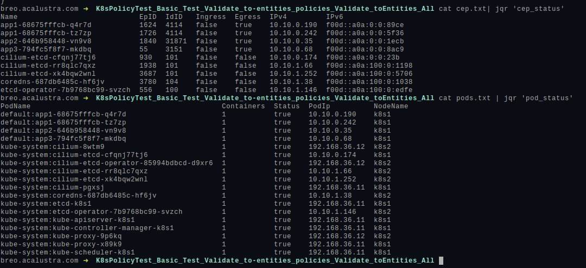

Over the last months I’m using quite a lot JQ custom functions and modules, If you need to deal with the same JSON multiples times, maybe you need to dump this information easily human-readable format.
Due to my work on top of Kubernetes, I need to deal with a lot of offline Kubernetes data, to debug issues from test results or users environment, this means that I need to query the same JSON schema multiple times, I also want to make my work faster, and here is where JQ plays a remarkable role.
For example, if you have the list of Kubernetes Pods in JSON (kubectl get pods -o json) and you want to know if all containers are ready for each pod, the JQ query look like this:
kubectl get pods -n kube-system -o json | jq \
'.items[]|[ (.metadata.namespace+":"+.metadata.name), ([.status.containerStatuses[].ready]|all)]'
[
"default:app1-6f995955d9-7m8qr",
false
]
[
"default:app1-6f995955d9-q9zxf",
false
]
[
"default:app2-5b49d5dd9-fsmlf",
false
]
[
"default:app3-645549cb84-f4phh",
false
]
This query is simple, but also is hard to remember, and finally, the next time that you need to use that, you will try, at least few times, before you get the desired result.
JQ have the possibility to define functions, so that query can be translated to a function, for example:
kubectl get pods -o json | jq \
'def container_status: .items[]|[(.metadata.namespace+":"+.metadata.name),([.status.containerStatuses[].ready]|all)]; container_status'
Is getting better, now you can write that function into ~/.jq where JQ is looking for, and container status query is getting super simple:
kubectl get pods -o json | jq 'container_status'
[
"default:app1-6f995955d9-7m8qr",
false
]
[
"default:app1-6f995955d9-q9zxf",
false
]
[
"default:app2-5b49d5dd9-fsmlf",
false
]
[
"default:app3-645549cb84-f4phh",
false
]
This can be more legible than before, JSON perhaps is not the best format to debug or quick lock, so jq output format can be used to make the output more human-friendly, I’m a big fan of TSV format for shell, but also sh format is good.
$ cat ~/.jq
def container_status: .items[]|[(.metadata.namespace+":"+.metadata.name),([.status.containerStatuses[].ready]|all)];
kubectl get pods -o json | jq -r 'container_status| @tsv'
'default:app1-6f995955d9-7m8qr' false
'default:app1-6f995955d9-q9zxf' false
'default:app2-5b49d5dd9-fsmlf' false
'default:app3-645549cb84-f4phh' false
kubectl get pods -o json | jq -r 'container_status| sh'
default:app1-6f995955d9-7m8qr false
default:app1-6f995955d9-q9zxf false
default:app2-5b49d5dd9-fsmlf false
default:app3-645549cb84-f4phh false
TSV is nice when you use with column commands, you can make a pretty table in seconds, I have the following alias/function to be more productive, so jq queries over the same JSON files are much simpler.
function jqr(){
jq -r $1 | column -t
}
$ kubectl get pods -o json | jqr 'container_status|@tsv'
default:app1-6f995955d9-7m8qr false
default:app1-6f995955d9-q9zxf false
default:app2-5b49d5dd9-fsmlf false
default:app3-645549cb84-f4phh false
After a while, your queries will look more powerfull, and your life will be easier.
def cep_status:
(["Name", "EpID","IdID", "Ingress", "Egress", "IPv4", "IPv6"]), (
.items[]|[.metadata.name, .status.id, .status.identity.id,
.status.policy.ingress.enforcing,
.status.policy.egress.enforcing,
.status.networking.addressing[0].ipv4,
.status.networking.addressing[0].ipv6]) | @tsv;
You can see all my examples here, and here an example output that I use all days:
Hope you enjoy it!